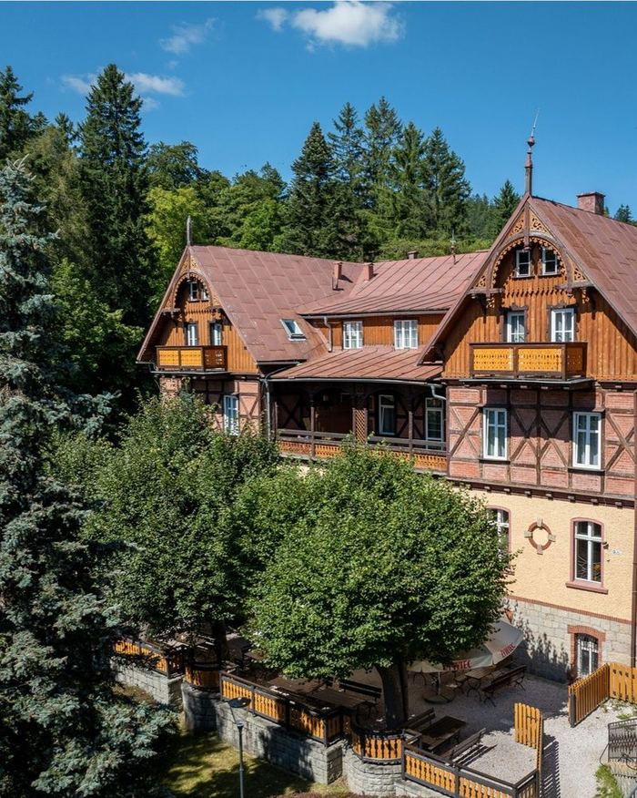

Miejsce, do którego schodzi się z gór
Szrenica, Śnieżne Kotły, Wodospad Kamieńczyka - wszystkie te szlaki mają wspólne zakończenie: moment, w którym można zdjąć plecak, usiąść i poczekać na gorący talerz.
Poznaj historię Wyszynku
Ten dom powstał w 1892 roku. Na dawnych widokach odnajdujemy Hotel Klose, później znany jako Hotel am Schenkenstein. W przewodniku W. Winklera z 1903 roku zapisano: 32 pokoje i właściciel o nazwisku Franke.
Od 2026 roku dopisujemy do tej historii własny rozdział: Karkonoski Wyszynk. Na parterze spotykamy się przy kuchni pogranicza, a nad restauracją mieszczą się pokoje Villi Bożena.

.jpg){kind=link}

Lany Pilsner Urquell prosto z beczki
Serwujemy Pilsner Urquell nalewany zgodnie z czeską tradycją. To rzemiosło wymagające cierpliwości i wprawy - efektem jest piwo o pełni smaku, jakiej nie osiągnie się z butelki.
0,5 l — 20 zł · 0,3 l — 17 zł
Hladinka
Klasyczne nalanie z kremową, gęstą pianą - podstawowy i najczęściej wybierany sposób podania.
Šnyt
Mniej piwa, więcej piany - lżejsza porcja idealna na krótką przerwę między daniami.
Mlíko
Mleczne nalanie samej piany - aksamitny akcent na zakończenie wieczoru.
Galeria
Lokalizacja i kontakt
Adres
ul. Jedności Narodowej 18
58-580 Szklarska Poręba
Parter Villa Bożena
Rezerwacje
Godziny otwarcia
Poniedziałek - czwartek: 12:00 - 20:00
Piątek i sobota: 12:00 - 21:00
Niedziela: 12:00 - 18:00
Aktualne godziny zawsze na naszej wizytówce Google.
Zobacz nas w Google Zobacz opinieNocujesz w Villa Bożena? Wyszynk masz na parterze.